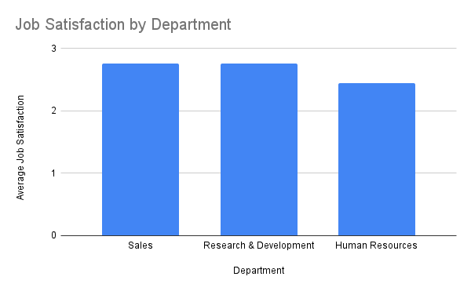

Part 1, Data Analysis Module
By Claire Hepperlen
Data Tools
I was already relatively proficient here, as I do enjoy statistics at least a little and much of the module had to do with critical thinking which is another strength of mine. I did get a nice reminder that linear regression is the way you find a line of best fit.
Big Data
I learned a bit about the sources of large datasets and challenges in storage and processing. I learned a bit more about parallelization, which is a good reminder to check out Rayon. The ethical issues around personal info in big data were also interesting to learn about.
Bias in Machine Learning
I finally learned about what weights actually are and what they do. Besides that, I was already familiar enough with most of the interesting biases inherent to datasets (and thus the models trained on them) that often end up perpetuating discrimination all over.
Test
The test wasn't particularly special. It wasn't super easy or anything; I did have to think a bit about all of the questions, but I could answer all of them fairly well.
Part 2, Making Fun of IBM
The Big Question
Which employees enjoy their jobs at a company still using large amounts of COBOL code completely unironically?
The Method
Any good data analysis requires data to analyze. The dataset in question? This one that tracked a bunch of IBM employees, including convenient factors like department and job satisfaction. I decided to average the latter based on the former. I ran some nice little code to do this in an Anaconda Nucleus notebook instance. The code in question (given that there is a file in the same directory as the notebook called "train.csv") was:
import pandas as pd
df = pd.read_csv("train.csv", usecols=["Department", "JobSatisfaction"])
# Sort the data by department, ends up in the unaveraged dict.
unaveraged = {}
department = df["Department"]
satisfaction = df["JobSatisfaction"]
for i in range(len(df["Department"])):
cur_dept = df["Department"][i]
cur_sat = df["JobSatisfaction"][i]
if not cur_dept in unaveraged.keys():
unaveraged[cur_dept] = []
unaveraged[cur_dept].append(cur_sat)
# Average all of the data by department
averaged = {}
ua_keys = unaveraged.keys()
for k in ua_keys:
averaged[k] = 0
sample_size = 0
for n in unaveraged[k]:
sample_size += 1
averaged[k] += n
averaged[k] /= sample_size
The Results
The most satisfied department in general was the sales department, but not by much. Following closely is surprisingly the R&D department, which says quite a lot about the state of IBM given that they are the ones who probably have to work the most with legacy code to integrate new with old. The worst department in terms of satisfaction out of the 3 in the dataset was Human Resources. Overall, no department breached a 2.73 average on the 4 point scale.
Conclusion
While the average person at IBM seems to not be particularly happy, the most satisfied employees were in sales and R&D.